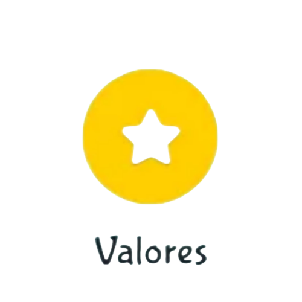

En Guardería Pequelandia damos comienzo a una etapa nueva y para ello estrenamos página web.
Es una satifacción para nosotros darte la bienvenida a nuestro sitio web, que nace con la voluntad de ofrecer con claridad y transparencia información de interés sobre nuestro centro privado de guardería infantil, una guardería en Cd.Juarez moderna y repleta de actividades durante todo el día.
Guardería Pequelandia tiene como visión convertirse en el Centro de educación y cuidado de niños elegido por más familias en Cd.Juarez, nuestro objetivo es desarrollar sus capacidades y actitudes, garantizando un clima de confianza y bienestar en donde nuestras especialistas trabajen con eficiencia y en equipo, pero sobretodo, con mucho amor.
Queremos ser un centro donde todos los niños y niñas puedan sentirse felices, seguros y motivados en todo momento a jugar, aprender, descubrir, investigar, soñar, inventar.
Y sobre todo ser una guardería que ofrezca tranquilidad a los padres de familia por el buen cuidado y seguridad

En Guardería Pequelandia promovemos los valores de respeto, honestidad , libertad, generosidad, confianza, justicia, solidaridad, responsabilidad, esfuerzo, compañerismo, cooperación, diversidad, y amor.
Guardería Pequelandia tiene la misión exeder las expectativas de los padres a través de calidad y mejora continua del servicio donde también los niños y niñas reciban un afecto de hogar y cuidado integral, motivando el desarrollo de cada pequeño como personitas independientes y seguras, audaces e innovadoras, originales y flexibles, dentro de un ambiente de amor y seguridad, usando el juego como medio para potencializar el desarrollo cada pequeño es nuestra filosofía; todo lo que se aprende jugando siempre será mejor aceptado por los niños, además que resultará más fácil y será un aprendizaje permanente.
Exeder las expectativas de los padres a través de calidad y mejora continua del servicio.